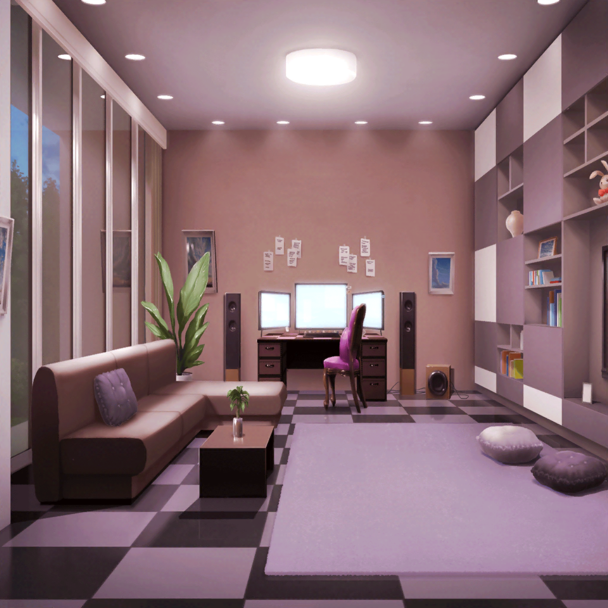

宇田川家 リビング
巴
ふぅぅ……
美味しいご飯も食べて、薬も飲んだから、
なんだか、かなりよくなった気がするよ
あこ
本当に？
よかった～
巴
みんなに感謝だな
巴
あとは、何よりもあこに感謝だ
あこ
そ、そんな感謝だなんてっ。
あこ、当たり前のことしただけだよ！
巴
その当たり前のことが、すごくうれしいんだよ
巴
あ、そうだ。
看病してもらったお礼に、
久しぶりに、一緒にゲームでもやるか？
巴
ずっと寝てて、体もなまってるし……
あこ
だ、ダメだよ、ゲームなんて……！ 少しよくなったからって、
まだ完璧に治ったわけじゃないんだから！
ほら、早くお部屋に戻って寝なきゃ、おねーちゃん？
巴
うーん……
でも、ずっと寝たままって退屈なんだよな
あこ
それでも寝てなきゃダーメ！
巴
……わかったよ。
じゃあ、アイス食べたい。
あこが、アイスを食べさせてくれたら、寝てもいいかな
あこ
もう……おねーちゃん、なんか子供みたいだよ
巴
いいじゃないか。
あこがこんなに頼もしくなったんだから、
少しぐらい甘えても
あこ
仕方ないな～。
えへへ、実はおねーちゃんがそう言うと思って、
アイス買ってきておいたんだ！
あこ
じゃあ、アイス持ってくるから、
食べたら、ちゃんと寝るんだよ？
あことの約束！
巴
ああ、約束だ
あこ
おねーちゃん、アイスだよ。
はい、あーん
巴
あーん……
ん～、冷たくて美味しい
あこ
……えへへ♪
なんか、こうやってると、
あこがおねーちゃんのおねーちゃんみたいだね
巴
あこおねーちゃんか。
それもなかなか悪くないな
あこ
ん～……でも、やっぱりあこは、おねーちゃんの妹がいい！
巴
そうなのか？
どうして？
あこ
だって、あこ、おねーちゃんにたーくさん甘えたいもん！
巴
……ははは。
うん、たくさん甘えていいぞ
あこ
それじゃ、おねーちゃんに抱きついちゃう！
巴
ま、待った！ 今はダメだよ。
アタシの風邪が治ってからじゃないと
あこ
あ、そっかっ。
それじゃあ、早く風邪治してねっ！
巴
うん、わかったよ。
それじゃあ、アイスも美味しくいただいたし、
約束通り、もう寝るよ。早く風邪を治すためにもな♪
あこ
はーい！
おやすみ、おねーちゃん！
巴
ああ、おやすみ
あこ
……さて、と。あこも洗いものとかしなくちゃ！
あこ
でも、あこがおねーちゃんか……
おねーちゃんて言ったらこんな感じかな？
あこ
『巴……大丈夫か？ ちゃんとついてこいよ？』……
『巴、そんなに泣くなって……おねーちゃんがいるから！』
あこ
……ぷっ、はは……あははは！
やっぱりあこには似合わないかも！！
あこ
あこはやっぱり、おねーちゃんの妹が１番だよ

巴の部屋
あこ
おねーちゃん、ちゃんと寝てるかな？
巴
すーすー……
あこ
よかった……ちゃんと寝てる
あこ
もう熱は下がったかな？
おねーちゃん、ちょっとおでこを借りるね
あこ
ん～……
うん！
あこ
ちゃんと、熱が下がってるみたい。
よかった……これなら、きっと明日にはよくなってる！
あこ
おやすみ、おねーちゃん。
明日は、一緒に学校に行こうね……